Jangan tunggu sampai kotoran meluap dan seisi rumah bau busuk. BejoPelita siap meluncur 24 Jam dengan Mesin Rooter Canggih. Bayar HANYA jika saluran sudah lancar 100%.
PANGGIL TEKNISI SEKARANG - WA 24 JAMKami tahu rasanya. WC meluap tengah malam bikin panik luar biasa. Wastafel bau busuk bikin nafsu makan sekeluarga hilang seketika.
Apalagi tagihan PDAM yang mendadak jebol karena pipa bocor yang titiknya entah ada di mana. Jangan biarkan tukang abal-abal menghancurkan ubin mahal Anda hanya untuk menebak-nebak sumber masalah.
Kami menggunakan teknologi standar industri modern. Mesin Spiral Drain Cleaner (Rooter) kami mampu menghancurkan lemak beku di dalam pipa tanpa perlu membongkar lantai sama sekali. Untuk masalah kebocoran, kami turunkan Acoustics Leak Detector untuk melacak rembesan secara presisi. Pekerjaan cepat, rapi, dan garansi uang kembali.
Pilih layanan spesifik sesuai masalah dan lokasi Anda. Tim kami tersebar dari Cinere hingga Margonda.
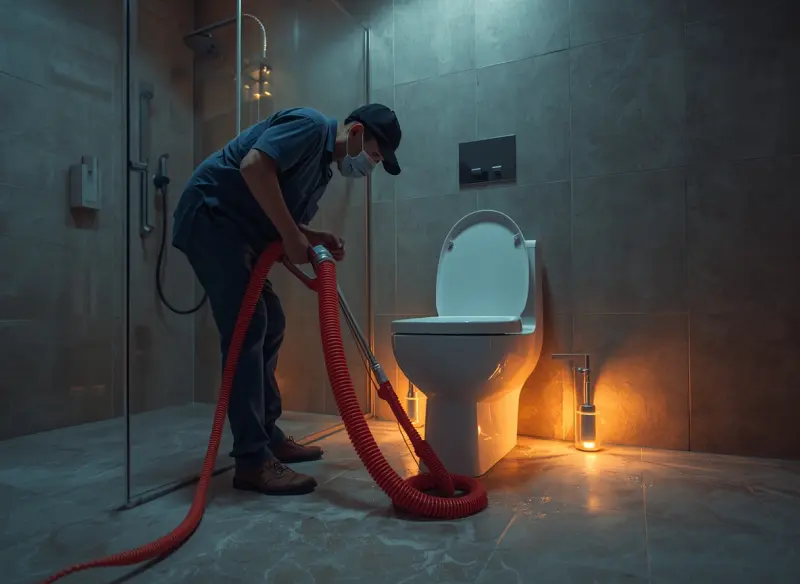
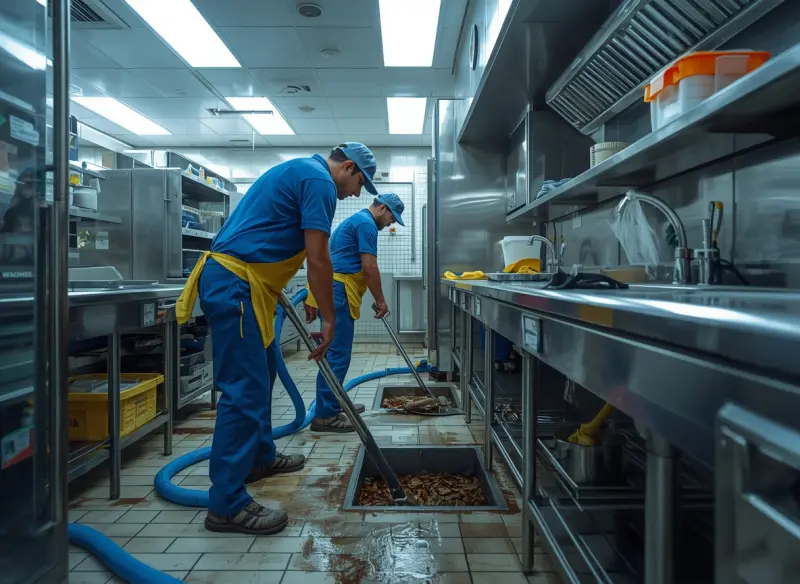
Ratusan rumah tangga dan pelaku bisnis di Depok telah terselamatkan. Setiap hari, armada kami bergerak menyisir gang-gang Cinere hingga gedung-gedung di Margonda. Lihat sendiri bagaimana teknisi kami mengeksekusi masalah di lapangan.
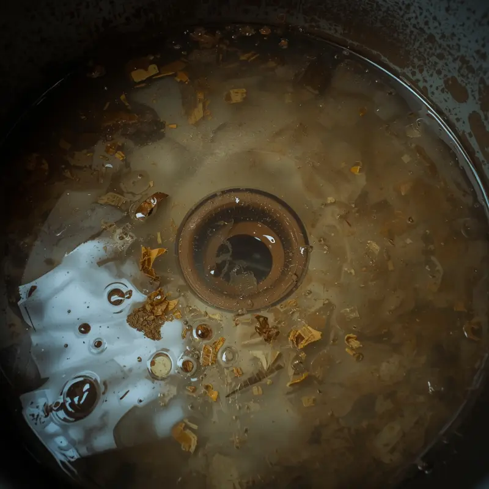
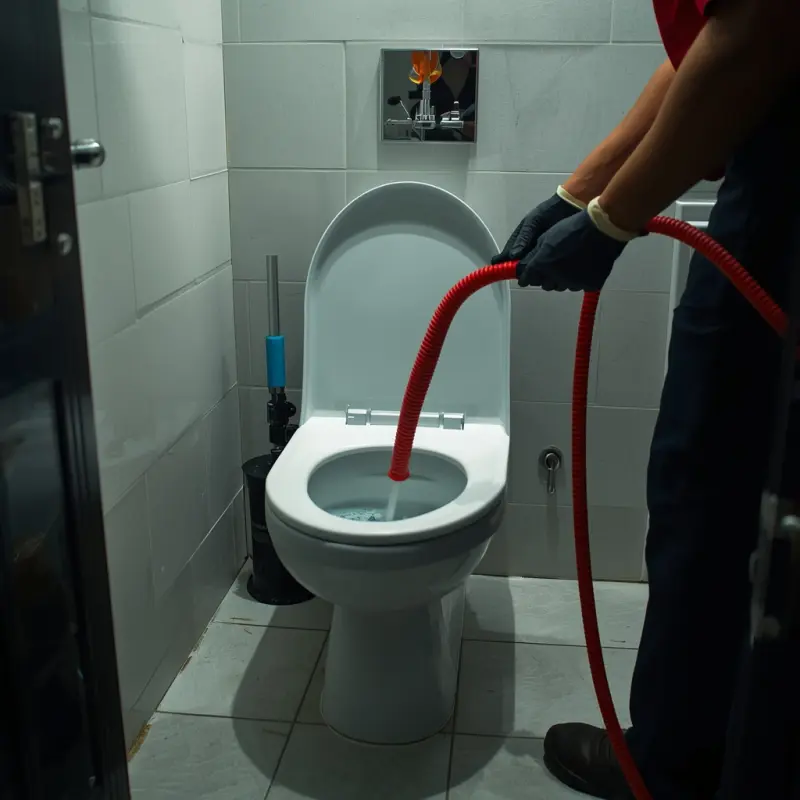
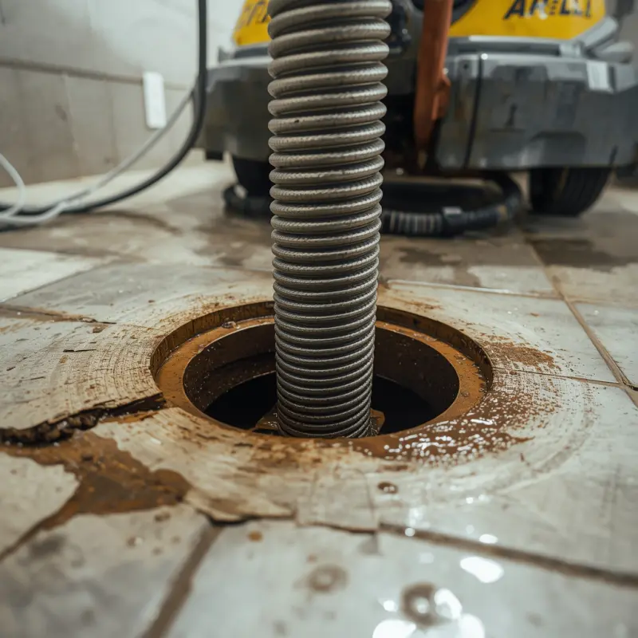
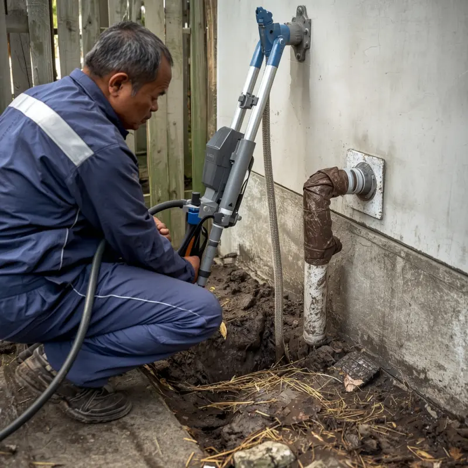
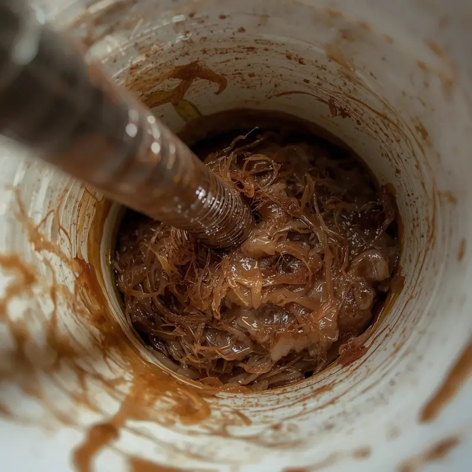
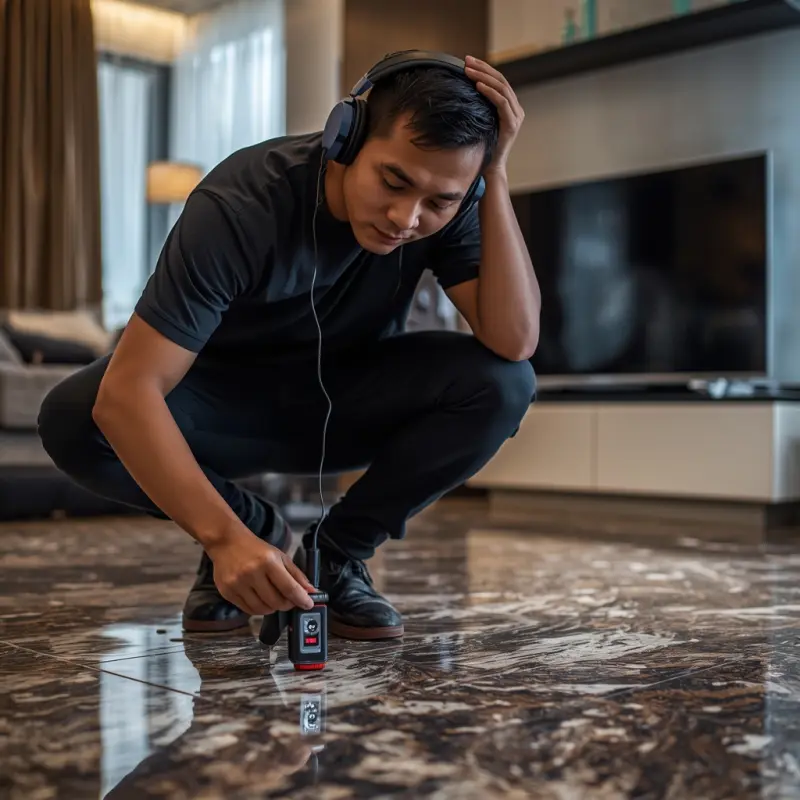
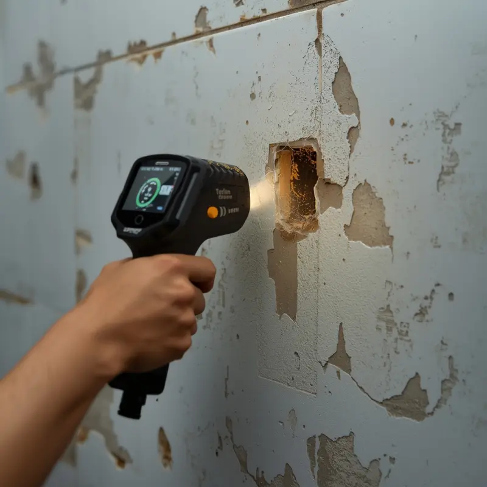
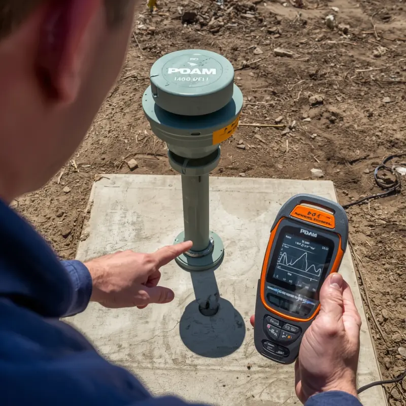
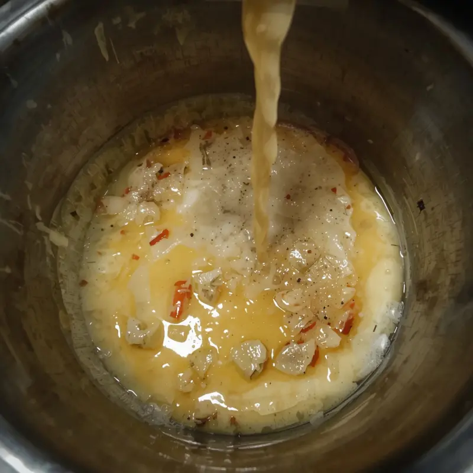
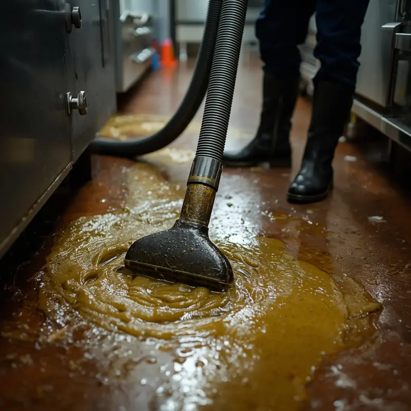
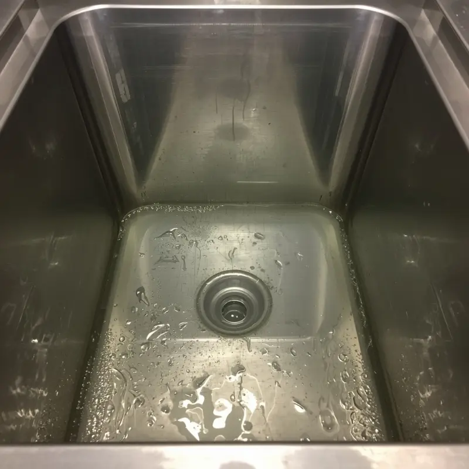
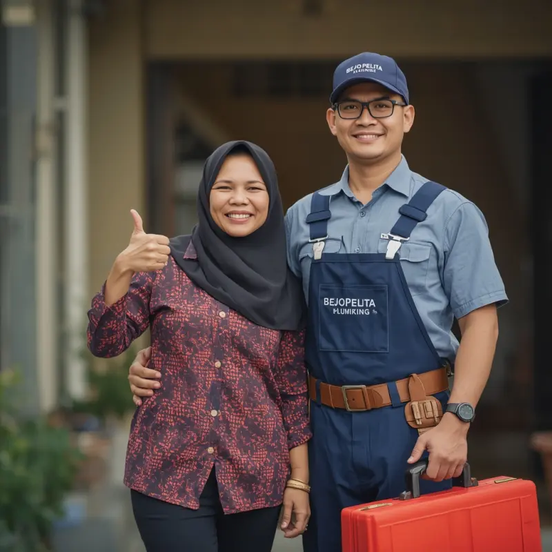
Jangan biarkan keluarga Anda tidak nyaman seharian. Tidak perlu siapkan uang muka (Tanpa DP). Anda cukup bayar saat saluran sudah terbukti mengalir deras.
Ambil HP Anda, klik tombol di bawah, dan teknisi BejoPelita akan segera merapat ke lokasi Anda dalam hitungan menit!